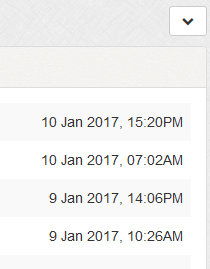

Toggle Navigation
Documentation
Entry Log
Overview
Enables the logging of usernames upon login. Useful to see if any security breaches have occurred.
Entry Log List
1
To delete, use checkboxes and the delete button. You can select all via the
icon.
2
To view IP information, click the IP address.To change the lookup service, edit the 'IP_LOOKUP' option in the 'admin/control/userdef.php' file.
Filters / Export
Click the
icon to show filter / export list.
1
Export to CSV
2
Clear Entry Log
3
Filter by staff member

To omit staff member from log, edit the 'admin/control/userdef.php' file and the 'SKIP_ELOG_USRS' option. See notes.